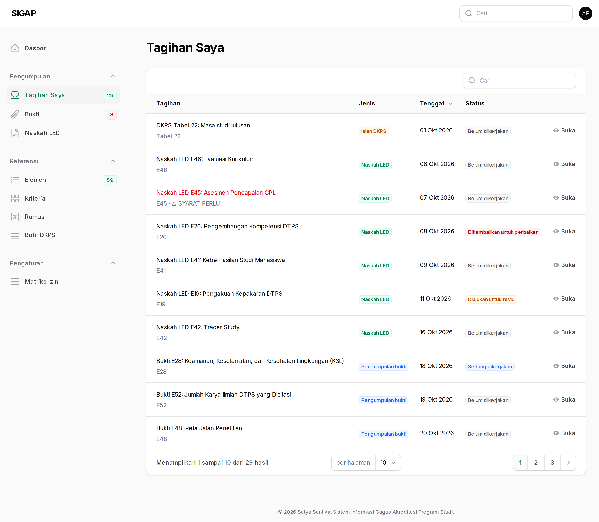
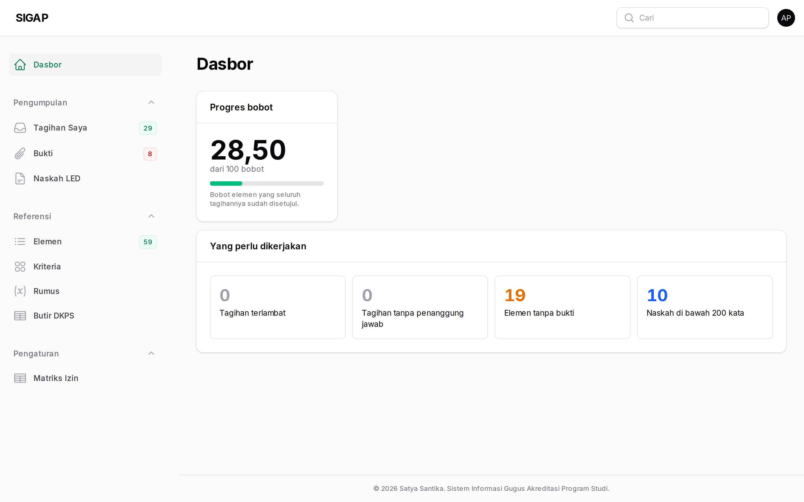
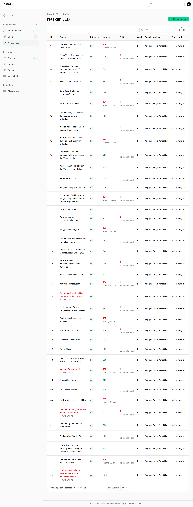
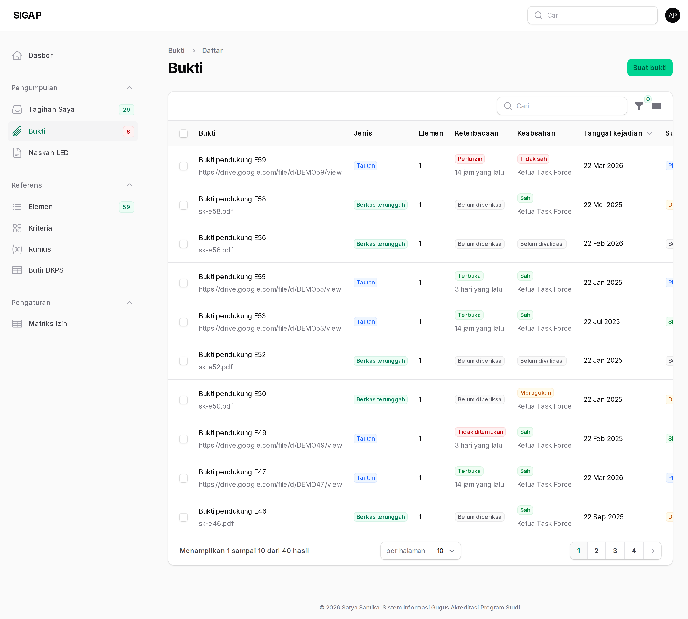
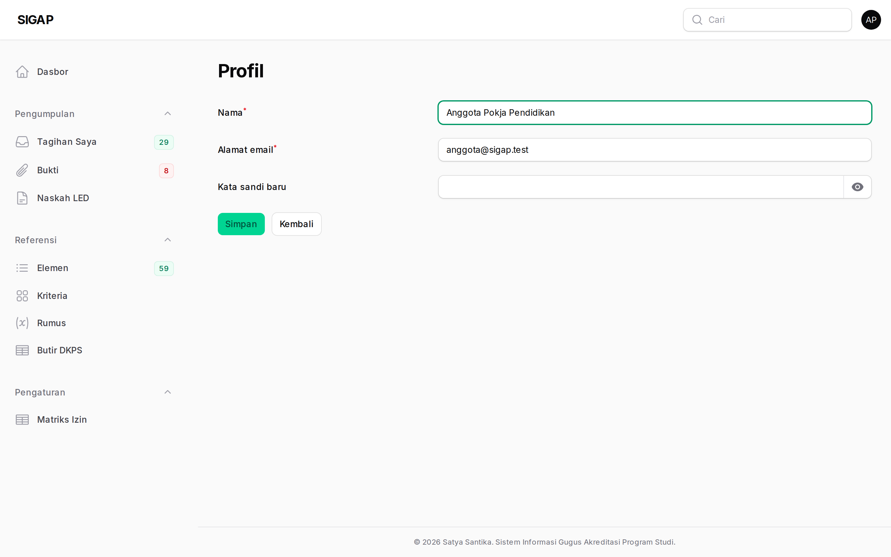
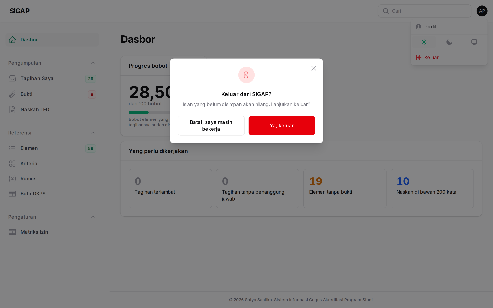

Anggota pokja melihat dan mengerjakan tagihannya sendiri. Anda menulis narasi, mengunggah bukti, dan mengajukan tagihan untuk direviu koordinator.
Anda tidak menyetujui tagihan — termasuk tagihan Anda sendiri. Itu bukan soal kepercayaan, melainkan supaya setiap tagihan dibaca setidaknya oleh dua pasang mata sebelum menjadi bahan akreditasi.
Tagihan Saya
Layar harian Anda, dan tempat paling masuk akal untuk memulai pagi: hanya tagihan milik Anda, hanya yang belum selesai, terurut tenggat terdekat.
Halaman ini sengaja dipisahkan dari Semua Tagihan. Orang yang membuka panel pagi hari ingin melihat apa yang harus dikerjakan hari ini, bukan 137 baris yang harus disaring dulu setiap kali.

Dasbor
Gambaran keadaan periode. Sebagai anggota, angka tagihan pada dasbor sudah disaring ke milik Anda sendiri.

Menulis narasi
Sistem tidak menulis narasi untuk Anda dan memang tidak dirancang untuk itu. Yang disediakan adalah angka, bukti, dan kerangka.
Setiap simpan membuat versi baru. Simpanlah sering — tidak ada yang hilang, dan versi lama selalu bisa dibuka lagi.

Mengunggah bukti
Dua hal yang wajib dan sering terlupa: tanggal kejadian dan sumber. Bukti tanpa keduanya ditolak saat disimpan.
Untuk tautan Drive, pastikan tautannya bisa dibuka oleh orang yang tidak punya akun di organisasi kita. Sistem memeriksanya persis seperti itu — tanpa kredensial apa pun — karena begitulah asesor akan membukanya.

Profil dan kata sandi
Nama dan kata sandi Anda sendiri diubah di sini. Tidak ada pemulihan sandi lewat surel; bila Anda lupa, hubungi administrator sistem.

Keluar
Keluar selalu bertanya lebih dulu, supaya narasi yang sedang Anda tulis tidak hilang karena salah klik.
